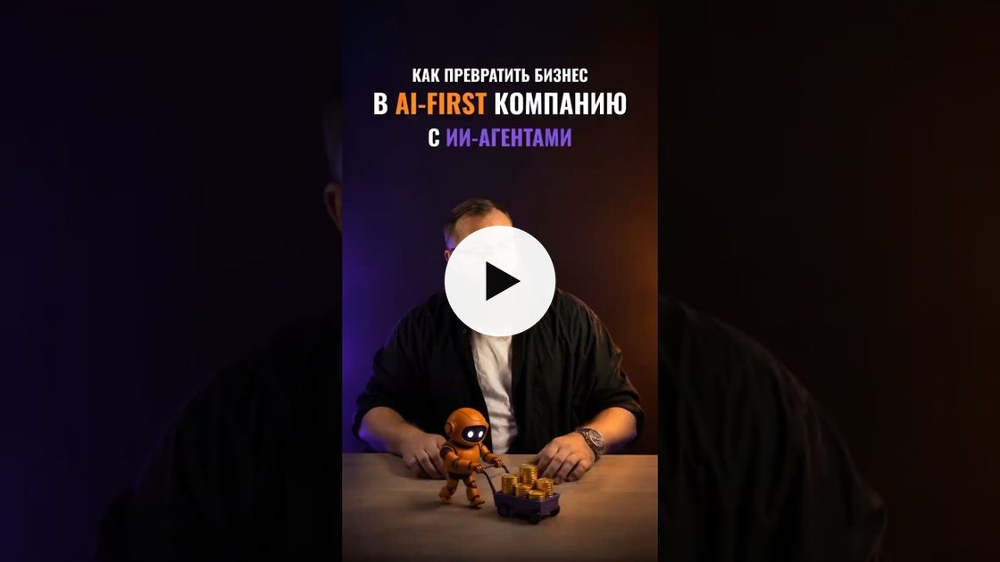

|
|
| Выпуск № 1 |
Еженедельный дайджест |
пятница, 27 ноября 2026 |
|
|
|
| ИИ · Исследования · Бизнес — главное за неделю |
|
 |
Привет! Это пятничный Датаист — всё главное за неделю в одном письме: новые видео, мысли из канала, свежие исследования и уроки Академии. Устраивайтесь поудобнее.
Андрей Кузьминых · Основатель Andre AI Technologies |
|
В номере
|
01
Видеожурнал
3 видео |
02
Авторский канал
3 поста |
03
Исследования
3 исследования |
04
Обучение
2 урока |
| 01 |
Видеожурнал |
3 видео | | 02 |
Авторский канал |
3 поста | | 03 |
Исследования |
3 исследования | | 04 |
Обучение |
2 урока |
|
|

8 авг · YouTube · 128 просмотров
Существует два типа компаний: AI-First-компании — и их клиенты. Первые перестраивают весь бизнес вокруг ИИ-агентов. Вторые продолжают масштабировать штат и покупать результат у первых. А к какому типу относится ваша…
▶ Смотреть видео |
|
17 фев · YouTube
|
4 янв · YouTube
|
|
|
11 окт · Telegram
OpenAI и Anthropic в последнее время выпускают столько обновлений, что возникает вопрос: за что брать деньги, если ИИ создает приложения по запросу? 1. Интерфейсы теперь генерируются прямо в чате. OpenAI представила Intelligent UI: интерактивные диаграммы и…
Читать в Telegram ↗ |
10 окт · Telegram
Постоянно слышу, как компании называют себя AI-First или AI-Native. А на деле просто раздают сотрудникам подписки на ChatGPT. Да, термины во многом маркетинговые, общепринятой шкалы нет. Но различия вполне реальные — давайте разбираться. Летом я представил на…
Читать в Telegram ↗ |
25 сен · Telegram
Недавно я делился аналитикой о том, что многие недооценивают роль обучения. При этом именно обучение помогает адаптироваться к происходящим изменениям. Поэтому я стараюсь передавать все, что знаю и использую сам, чтобы помочь другим быстрее войти в новую…
Читать в Telegram ↗ |

▶ Видео · 0:55 |
Andre AI Technologies
ИИ-трансформация вашего бизнеса
Бесплатная диагностика ИИ-зрелости, ИИ-стратегия, ИИ-операционная система «Нейроний» и 3 месяца обучения команды с ментором.
30+ компаний | $100+ млн эффекта | 10+ лет в ИИ |
Бесплатная ИИ-диагностика → |
| |
|

23 ноя · 5 мин чтения
Сгенерированные видео становятся всё убедительнее — и всё сложнее понять, где в них спрятана подделка. Исследователи предлагают ИИ-агента, который не выносит вердикт с первого взгляда, а шаг за шагом проверяет изображение и звук…
Читать разбор → |

20 ноя · 5 мин чтения
|

19 ноя · 5 мин чтения
|
|
|
 |
Модуль 3 · Урок 9
Разберём, как задать агенту условие завершения и технические лимиты, почему нескольких удачных примеров недостаточно для оценки надёжности и зачем проверять весь путь…
Открыть урок → |
|
 |
Модуль 3 · Урок 8
Модель отвечает за интеллектуальную часть ИИ-агента. Обвязка управляет его работой: передаёт контекст, подключает инструменты, проверяет действия и сохраняет состояние…
Открыть урок → |
|
 |
| Nr |
Нейроний · AI Operating System |
Ведите ИИ-бизнес в ИИ-операционной системе
Единый контекст бизнеса, ИИ-суперагент и 100 готовых ИИ-сотрудников в десяти отделах — от целей и задач до продаж, поддержки и кода.
Открыть AI OS →Смотреть демо
| |
|
| ДАТАИСТ |
| Датаист в соцсетях |
| YouTube · Telegram · Instagram · TikTok |
Вы получили это письмо, потому что подписались на рассылку Датаиста на dataist.ai.
Отписаться · Открыть в браузере |
|
|